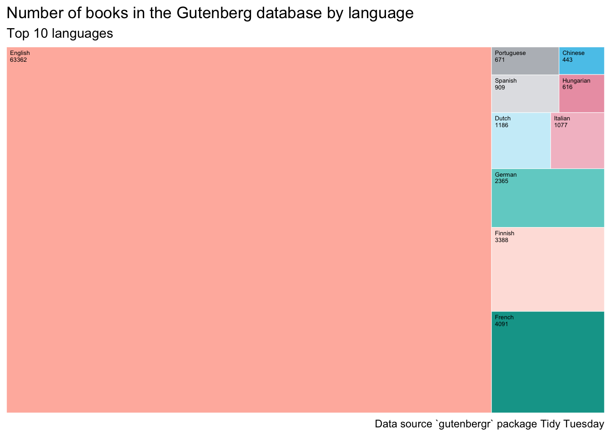
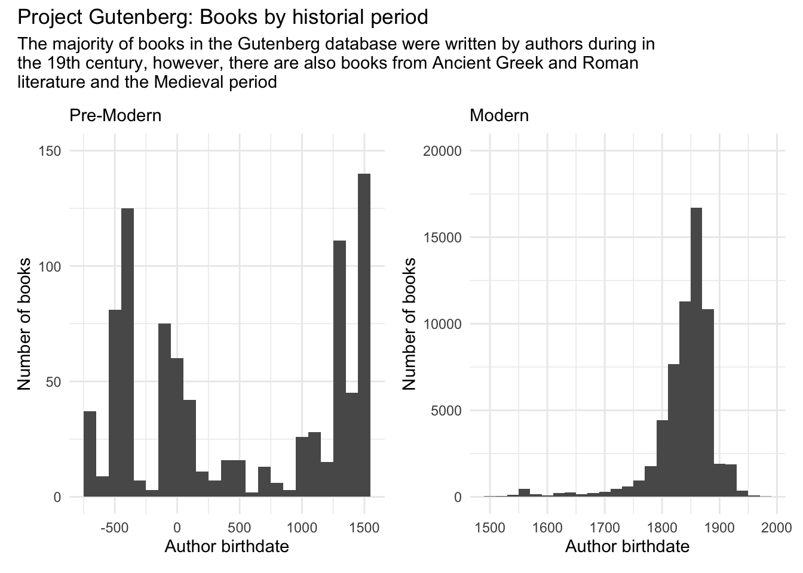

Code
library(tidyverse)
library(tidytuesdayR)
library(janitor)
library(ggeasy)
library(patchwork)
library(treemapify)
library(ggtext)
# adjust year/week values here
year = 2025
week = 22tidy tuesday week 22
Jen Richmond
June 10, 2025
The Tidy Tuesday data this week comes from the gutenbergr package, which pulls data about the ebooks and authors from Project Gutenberg.
---- Compiling #TidyTuesday Information for 2025-06-03 ----
--- There are 4 files available ---
── Downloading files ───────────────────────────────────────────────────────────
1 of 4: "gutenberg_authors.csv"
2 of 4: "gutenberg_languages.csv"
3 of 4: "gutenberg_metadata.csv"
4 of 4: "gutenberg_subjects.csv"Reminder: the dplyr::distinct function is useful for getting rid of duplicate rows. The base::unique function is similar.
janitor::get_dups will pull duplicate entries in a particular variable.
If we want to count the number of unique entries in a variable, we need dplyr::n_distinct
Rows: 76,205
Columns: 3
$ gutenberg_id <dbl> 1, 2, 3, 4, 5, 6, 7, 8, 9, 10, 11, 12, 13, 14, 15, 16,…
$ language <chr> "en", "en", "en", "en", "en", "en", "en", "en", "en", …
$ total_languages <dbl> 1, 1, 1, 1, 1, 1, 1, 1, 1, 1, 1, 1, 1, 1, 1, 1, 1, 1, …There are books in 70 languages represented in the Gutenberg data.
The metadata dataframe contains information about books and what language they are in. tabyl() counts how many books there are in each language; here I am displaying the top10 languages.
| language | n |
|---|---|
| en | 63362 |
| fr | 4091 |
| fi | 3388 |
| de | 2365 |
| nl | 1186 |
| it | 1077 |
| es | 909 |
| pt | 671 |
| hu | 616 |
| zh | 443 |
I don’t know what many of language codes in that table are, but I found a table of codes here. I used datapasta to get the codes into R and then join them to the books_per_language dataframe.
| code | n | language |
|---|---|---|
| en | 63362 | English |
| fr | 4091 | French |
| fi | 3388 | Finnish |
| de | 2365 | German |
| nl | 1186 | Dutch |
| it | 1077 | Italian |
| es | 909 | Spanish |
| pt | 671 | Portuguese |
| hu | 616 | Hungarian |
| zh | 443 | Chinese |
There are so may more books in English relative to other languages, perhaps a treemap plot would work here. Referring back to my 30 Day chart challenge code using the treemapify package.
palette <- c("#59C7EBFF", "#CCEEF9FF", "#FFB8ACFF", "#FEE2DDFF", "#0AA398FF", "#71D1CCFF", "#ECA0B2FF", "#F3BFCBFF", "#B8BCC1FF", "#E1E2E5FF")
book_codes %>%
ggplot(aes(area = n, fill = language, label = paste(language, n, sep = "\n"))) +
geom_treemap(colour = "white") +
scale_fill_manual(values = palette) +
geom_treemap_text(colour = "black",
place = "topleft",
size = 5,
grow = FALSE) + # option from ggfittext to NOT make font fit box
easy_remove_legend() +
labs(title = "Number of books in the Gutenberg database by language",
subtitle = "Top 10 languages",
caption = "Data source `gutenbergr` package Tidy Tuesday") +
theme(text = element_text(family = "Karla"),
plot.background = element_rect("antiquewhite")) +
easy_caption_size(8)
There are 119 authors in the dataset who are under more than one author_id.
Here I am joining the authors dataframe to the metadata to add the author birthdate and deathdate. I am adding new columns to distinguish between authors who lived in the time of the printing press (post 1500) vs. earlier.
meta_authors <- left_join(metadata, authors, by = "gutenberg_author_id")
meta_authors <- meta_authors %>%
select(gutenberg_id, title, author = author.x, gutenberg_author_id, alias, birthdate, deathdate, language, wikipedia, gutenberg_bookshelf, rights, has_text) %>%
mutate(timepoint= case_when(birthdate < 1500 ~ "ancient",
birthdate >= 1500 ~ "modern"))a <- meta_authors %>%
filter(timepoint == "ancient") %>%
ggplot(aes(x = birthdate)) +
geom_histogram(binwidth = 100) +
theme_minimal() +
scale_y_continuous(limits = c(0,150)) +
labs(subtitle = "Pre-Modern", y = "Number of books", x = "Author birthdate")
m <- meta_authors %>%
filter(timepoint == "modern") %>%
ggplot(aes(x = birthdate)) +
geom_histogram(binwidth = 20) +
theme_minimal() +
scale_y_continuous(limits = c(0,20000)) +
labs(subtitle = "Modern", y = "Number of books", x = "Author birthdate")
a + m +
plot_annotation(title = "Project Gutenberg: Books by historial period", subtitle = "The majority of books in the Gutenberg database were written by authors during in \nthe 19th century, however, there are also books from Ancient Greek and Roman \nliterature and the Medieval period")